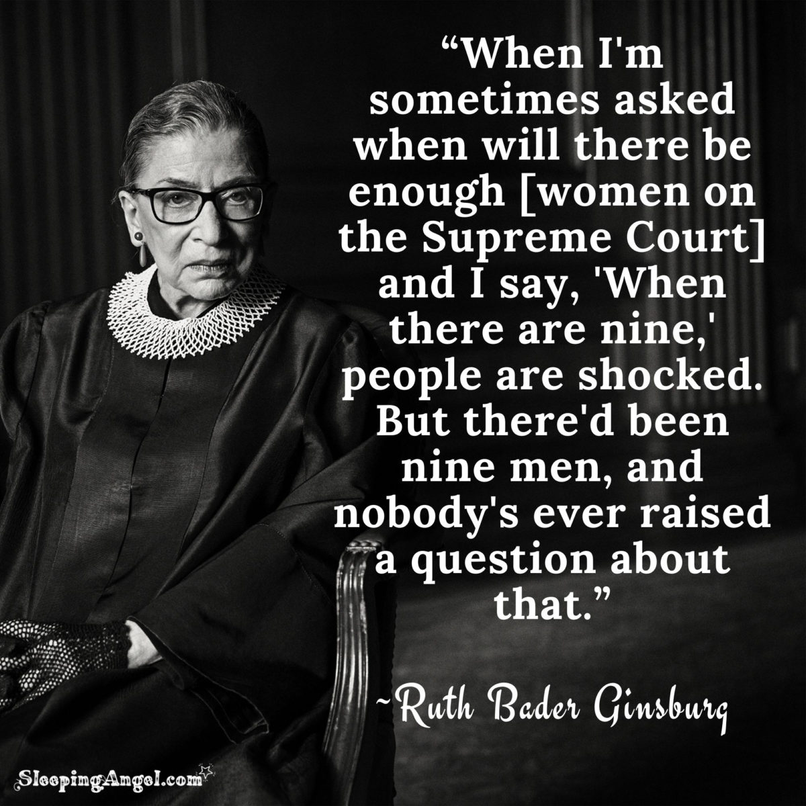

COM 110 · UCLA · Winter 2026 · Tszshan Huang
Enter PortfolioBefore I enrolled in COM 110, I was already collecting images of women. Tucked in my phone were photographs from Girl on Girl: Art and Photography in the Age of the Female Gaze: images by Pinar Yolacan, who traveled to remote communities searching not for what makes women different, but for what they share: strength, confidence, and power. Images by Aeta Bartos, who deliberately refused to let her female subjects return the viewer's gaze, creating what she described as a self-sufficient world of women, entirely independent of men and their looks. I did not yet have the vocabulary to explain why these images moved me the way they did. I only knew that something about the usual way women were photographed, the way they turned toward the camera, available, arranged for consumption, felt wrong. COM 110 gave me the language I had been missing to explain.
I enrolled in this course because I had been a feminist for years, but only in the most personal sense. I noticed things. I felt things. I reflected on small moments in my own life and in the lives of women around me. What I lacked was a theoretical framework to connect my private observations to something larger, more structural, more named. I expected the course to be about advertising stereotypes and media representation, the familiar talking points. What I did not expect was how deep the roots went.
The moment I felt the ground shift beneath me was during the screening of Codes of Gender. Erving Goffman's concept of the hyper-ritualization of gender in advertising did not introduce me to a world I had never seen. It named a world I had been living in without realizing it. The idea that advertisements do not create gender norms but rather take existing everyday gestures and amplify them until they appear natural and inevitable, which struck me with the force of recognition. Suddenly I could see it everywhere: the canting posture, the recumbent pose, the hand that touches rather than grips, the head that tilts rather than holds steady, the gaze that invites rather than commands. I went back to my photography book and looked again. What Bartos had been doing all along is refusing to let her subjects perform availability for the viewer. It was a deliberate rejection of these exact codes. I loved those images intuitively. Now I understand why.
This course also pushed me toward an uncomfortable question I had been avoiding: why do I keep returning to topics that are unresolved in my own life? Both of my essays this quarter emerged not from curiosity alone, but from personal confusion. My first paper analyzed China's "beauty duty" (fu mei yi) through Gramsci's theory of hegemony — arguing that the reframing of aesthetic labor as self-love is not liberation but a more sophisticated form of control. I wrote that paper because I had felt the weight of beauty duty before I had a name for it: the whitening products, the persistent monitoring of my own body, the guilt that came with doing less. Gramsci helped me see that the shift from "do it for men" to "do it for yourself" had not freed me but had simply made my consent more efficient. My second paper examined how pornography has turned heterosexual intimacy into a performance script, driven by masculine-centric standards that pressure women to perform acts not for their own pleasure, but to remain relevant. Again, this was not an abstract concern. These were questions I had been living with.
Perhaps the most significant change this quarter has been in how I assign responsibility. Before, when I observed women participating in the very systems that constrained them, I sometimes felt frustrated, even quietly judgmental. The course taught me that this kind of individualized blame is itself a mechanism of power. It obscures the structural forces that manufacture consent, making what is social appear personal, what is political appear like a free choice. Understanding hegemony did not make me less critical; it made my critique more accurate.
I am entering a career in marketing. Advertising is where gender codes are rehearsed at scale. It is where hyper-ritualization happens. It is also, therefore, where intervention is possible. I want to work in spaces where the narrative can be changed: not through grand gestures, but through the slow, deliberate work of making different images, the way Yolacan did when she went to the margins and looked for what women share rather than what separates them.
To the girl reading this: I hope what you find in these pages is not just a record of what was learned, but evidence of someone learning how to see.
Sincerely, Tszshan
For this part of the course, I will be using Louis Althusser, Antonio Gramsci, and Michel Foucault's ideas to understand how gendered identities are formed, kept in place, and controlled. I chose this material because it was hard to understand at first, but it taught me a way to talk about things I had experienced without really understanding them. My understanding of these theories grew a lot when I used Gramsci's idea of hegemony in Paper 1, where I looked at how the Chinese idea of fúměi yì ("beauty duty") is a way of controlling people's ideas rather than a choice. Reading these theorists alongside my own life taught me that ideology works most powerfully when it feels invisible, like nature, preference, or even empowerment.
One of the most interesting ideas I learned this quarter was Louis Althusser's notion of interpellation. Ideology is the process by which we are encouraged to adopt a particular identity. In the lecture on ideology, Althusser said that things like family, media, schools and religious institutions quietly encourage people to follow the main ideas of a society without using force. Gender is not just something we are, it's something we are always being asked to be through these institutions.
I saw a good example of this when I noticed a change in the way people spoke on Chinese social media. For a long time, the phrase 妇女节 - International Women's Day was systematically replaced by 女神节 "Goddess Day" by brands and platforms. The way the company advertised also changed. Instead of celebrating women's rights and social equality, the advertisements encouraged women to "treat themselves" to beauty services and skincare products. What looked like a celebration was, in Althusserian terms, a way of getting people to do something. Social media and commercial brands act as ISAs, encouraging women to be more concerned about how they look than about politics. The word fùnǚ (women) was important politically and was used to describe a group. Nǚshén (goddess) was used to describe women who were beautiful and should be consumed. The language used here was not neutral, but ideological. Lately, I have noticed a movement trying to take back the word "fùnǚ". They say that the word should be respected and not replaced. This resistance is itself a sign of what Althusser's framework makes visible: once we recognise interpellation, we gain the capacity to refuse it.
Gramsci's idea of "hegemony" builds on Althusser's analysis by explaining how dominant ideologies, like religion, keep on going without using force. As the lecture explained, Gramsci said that hegemony is when force and consent balance each other, without one overpowering the other. The important thing to understand is that the subordinate group often agrees to stay in that position. This is not because they have been "fooled", but because the idea that they are in control feels normal, sensible or even freeing.
In my Paper 1 for this course, I looked at the Chinese idea of fúměi yì (服美役), which I translated as "beauty duty". This is the hard work women do to look beautiful in the eyes of society. The media portrays fú měi yì as a way of expressing yourself or empowering yourself; while it's actually a way of keeping women in a subordinate position because it preserves gendered subordination by manufacturing women's consent rather than liberating them. Society does not force women to be beautiful. Instead, it creates a cultural environment where being beautiful feels like a choice - even a feminist one. This is hegemony at work.
I found this analysis personal because I could relate to it. For most of my life, I accepted beauty standards without asking where they came from. I did my "duty" to look good not because I was told to, but because I had learned from society that this was just what women did. Gramsci helped me understand that this "voluntary" compliance is exactly how ideology is passed on from one generation to the next.
Michel Foucault's work is the one that I find most interesting. Foucault asks: where is power located? Foucault's answer is that power is not found in one single point. It is spread across society and shown in every moment when people are monitoring and regulating each other's behaviour.
Applying gender, the panopticon means that gender norms are enforced not only by institutions but by each of us, all the time, in our daily lives. I experienced this in a very personal way. For years, I always self-monitor to make sure that I was presenting myself well. I made changes to how I looked and measured myself against standards that were chosen for me. Foucault might describe this as the internalization of the gaze: I had become both the watcher and the watched, policing my own femininity without needing any external authority to do so.
I also saw a troubling side to Foucault's panopticon in feminist spaces online. Sometimes, the pressure to fit in means women are checking each other's feminism. When people argue about whether someone is "feminist enough" or "too radical", it often means that they are not looking at how the system suppresses women. Instead, they are focusing on interpersonal judgement. In Foucauldian terms, the focus has shifted from systems to individuals. This doesn't mean that these debates are pointless, but it does make us ask an important question. That question is about whether surveillance, even when it is used to make progress, could in fact be making the very systems of power that it is trying to challenge stronger.
The most important experience I had with this competency happened before I enrolled in this course. When I was a teenager, I posted an essay on the internet about feminist ideas. The response was very negative. I was met with a wave of unkind comments that made me feel that my perspective was wrong, naive, and unwelcome. I stopped talking. Looking back, I can now see this experience through the eyes of all three theorists at once: the media platform functioned as an ISA; the unfriendly reaction reflected a desire to stop opposition before it could challenge the status quo; and the effect of that mass judgement was to make me police my own voice: to watch and silence myself.
What I learned on this course was not just a bunch of ideas, but a way of thinking about my own history. I didn't stop talking because I might be wrong. I stopped talking because beliefs are powerful: because hegemony works, panopticon functions. This has been, in a strange way, freeing. It has helped me to feel more compassionate towards my younger self, instead of feeling embarrassed. I now understand that the fear I felt was a reaction to the situation I was in, and not a sign of my own weakness.
Before taking this course, I thought gendered violence was only physical, like assault, rape and murder. I thought these were just isolated incidents of violence committed by disturbed individuals. The way I see the issue changed a lot after this competency. I learned that violence is a structural outcome of a male-dominated society, and I realized that I had never fully understood this before. I used to think of violence in a narrow way. But now I understand that violence can be hidden and is a normal part of life.
For most of my life, I thought I was just someone who was always anxious. I thought of myself as someone who was "naturally cautious". I didn't link my habits to gender until this competency gave me the words to do so. I read reviews of places before I travel. I look for ones that are safe for women travelling alone and whether it is safe to go out at night. I am naturally cautious of unwanted male attention. When I have experienced harassment, the first questions people ask me are not "are you okay?" but "what were you doing?" and "do you think you might have given him the wrong idea?" At the time, I thought this was fair enough. It was only after I started working with this topic that I understood what was really going on: I had spent my whole life trying to prevent violence from happening, and when I failed, I was blamed for it.
This experience matches what the lecture says about the "continuum of violence". This is a concept developed by the scholar Liz Kelly. The term "the continuum" refers to the idea that different forms of violence are all connected, including the fear of violence itself. The important thing to understand is that gendered violence doesn't need a physical act to control a person. The possibility of violence is enough. As the lecture notes, the threat controls and manages the behaviours of those who are at risk of violence and importantly, not knowing who may be violent means that potential victims are "policed" in a certain way. My careful research before the trip, my cautious answers to strangers, and my natural caution in public places: these were not just my personality. They were survival strategies that were learned over time. These strategies were based on the idea that violence is more likely to happen to women than men. I had been controlled by a system, not just one person.
This is exactly why the lecture says that individual problems cannot explain the large amount of violence against women. It is more effective to focus on the cultural context of violence instead, because violence must be understood as a result of gender roles and patriarchy. Wood explains that patriarchy needs inequality to survive, and this inequality is kept going through fear, discomfort, or anxiety that results from the possibility of being violent. The violence doesn't have to be everywhere; it just has to be possible everywhere.
One of the most striking moments in this unit's lecture was its focus on language: how the words we choose for violence either show or hide its severity. The lecture says that words like "domestic dispute", "spousal conflict" and "family problems" make intimate partner violence seem like something small, shared, and easy to solve. It makes violence inside a family seem less serious than violence between strangers.
I understood this straight away because of the culture I grew up in. In Chinese families, domestic violence is often described as a "family dispute". This change in language moves the focus away from the legal and moral issues and puts it back into the private, family-managed sphere. This way of thinking is not random; it is based on strong cultural beliefs. Idioms like "when the family is in harmony, all things prosper" (家和万事兴) and "harmony above all" (以和为贵) show that family unity is the most important thing in life. In this situation, reporting a partner to the police is not seen as a way of protecting oneself; it is seen as a betrayal of the family. Women who do ask for help are often told they have brought shame upon their family, or asked why they did not just "provoke" the situation. And when children are involved, the pressure gets even worse: the idea that parents must stay together for the children: no matter what the children see. It becomes another reason to ignore the violence instead of talking about it. The police are seen as a last resort, and many people see them as a form of social disgrace. The result is a cultural architecture where silence is seen as a good thing and endurance as a sign of love.
Many women will recognize this situation too: a girl being teased, physically pushed or bullied by a boy at school, and an adult telling her that the boy is only doing it because he likes her. This explanation, meant to be comforting, actually teaches children something very harmful. It makes them think that when a man is aggressive towards a woman, it is a sign of his love for her. It also makes them think that if a man is angry with them, it is because they have done something to make him angry. It is the same logic that later asks a harassment survivor, "What were you doing?" The message is always the same: women are the reason for men's behaviour, and it is women's job to control that behaviour. Language is not neutral. It is the way in which violence is made normal and continues over time.
Not all violence against women is obvious. This was the most important thing I learned in this competency. I had started to think about this in my second course paper, but I had not yet explained it using the idea of the violence continuum.
In that paper, I looked at how pornography works as what Simon and Gagnon call a "sexual script": a cultural template that shapes expectations around sex. In my essay, I talked about Cindy Pierce's Sex, College, and Social Media. I argued that for many young people, being in a heterosexual relationship now is like performing a script that is meant to be seen by others. It's not about enjoying each other's company. Women feel they have to do certain sexual things because they think if they say no, their partner won't want them, or they won't want the relationship. Pierce says that many women do things that hurt them to "stay popular and be considered sexy".
When I wrote the paper, I thought this was a problem of the media influence and miscommunication. After studying this competency, I would now give it a different name: internalised coercion. This is what the competency describes as violence that operates not through physical force but through "fear, discomfort, or anxiety". If a woman has sex because she is afraid of what other people will think if she says no, she has not chosen to do it. She has dealt with a system that has made her feel threatened because of her culture. Her compliance does not show that she wants to; it shows that she has thought about what will happen if she doesn't comply.
This is what the lecture says is the most important part about gendered violence: it is done to people based on their gender or sexual orientation and makes people feel humiliated, unsafe, or inferior because of their gender. The woman performing sex for the man watching, instead of for her own pleasure, and who is threatened with being discarded if she does not, experiences exactly this. The threat is real, even if the weapon is cultural expectation rather than physical force. I now understand that Kelly's continuum of violence is connected to sex, deciding what counts as "normal" sex and who gets to define it.
The most quietly hopeful moment in this whole competency was the idea of "rape-free societies". Studies show that in societies where men and women have more equal roles, and where the values are more focused on caring for others and non-violence, there is much less sexual violence. This finding does not just show that violence can be reduced. It suggests that the violence we now see as inevitable is actually something that can be changed. It is a result of specific social structure, not human nature.
I find this both genuinely hopeful and deeply frustrating. I'm hopeful because it means the world we are trying to build is not just an imaginary, perfect world. It has existed, and continues to exist, in places. If gender equality can reduce violence, then gender equality is about more than just ideas. It is also about doing things that make the world a better place. It's frustrating because the distance between here and there feels huge. The forces that keep things the way they are, the legal systems that are slow to step in when there's family violence, the media that makes dominance seem sexy, and the cultural scripts that teach girls to take responsibility for other people's behaviour, are deeply rooted.
But what I've learned from this competency is that personal experiences can also be shared. My habits of self-monitoring, my culture's language for family violence, my generation's confusion about desire and performance are not individual problems. They are the shape of a structure. Structures can be changed, unlike human nature. The first step is to give them names.
This section is about how I worked on Competency 10 through watching documentaries, looking at media criticism and reading about the history and ideas behind gender movements. I included Mary Dore's She's Beautiful When She's Angry, Pop Culture Detective's video essays on The Big Bang Theory and sexual assault in comedy, and Julia T. Wood's chapters on women's and men's movements. They all show that gender movements are not just past tense, but are still happening and being talked about today: in a late-night habit, a television show, a joke made at the dinner table.
She's Beautiful When She's Angry is a documentary that talks about the U.S. women's liberation movement from 1966 to the early 1970s. It does this through interviews with over thirty activists. What I couldn't forget was the logic behind one particular action: "Take Back the Night" marches were protests where large groups of women took to the streets after dark. They were protesting sexual violence and demanding that women be able to use public spaces freely. The name itself is a political statement. It acknowledges that women have always had unequal access to public spaces.
I did not expect this to feel personal. But then I thought about it, and I realized that I have always been careful not to drink from a glass that I can't see when I'm at a bar. I don't remember when I learned this rule. I learned it from friends, warnings, and from women's understanding of risk. I had never asked why my male peers don't seem to make the same calculation. This difference shows that some people are more likely to be assaulted with drugs than others. It also shows that some people must do things to stay safe just to be part of society. The women of the second wave understood that this kind of private change was a political condition. "The personal is political" was more than a slogan. It described a reality: what women experienced as individual caution was a widespread form of discrimination that was accepted as normal. Take Back the Night was successful, in part, because it refused to treat a political problem as a private one.
The book "Sexual Assault of Men as Comedy" shows how popular entertainment often uses stories of male sexual assault as humor. It does this by making the victims the targets of the jokes, not the attackers. It makes men who have been assaulted seem weak and therefore funny. When actor Terry Crews spoke to Congress about his own experience, he explained the logic behind it. He said that the assault wasn't about sex. It was about power and control. But the ridicule Crews faced after coming forward was similar to the jokes being made about the topics discussed. This is how toxic masculinity can make men feel trapped: the culture that demands that men be strong also laughs at them for not being strong enough.
I saw a version of this in a show I had watched for years. When I learned that the lead actor of Criminal Minds, Mandy Patinkin, left after two seasons because he was upset about the amount of graphic violence directed at female victims, I started to remember the series differently. He named it and refused to continue in a way of using women's suffering as a weekly drama, what critics call the "male gaze" and the "women in refrigerators" trope: female pain as a way to move male characters forward. Pop Culture Detective's analysis of The Big Bang Theory explains why this content continues: through "lampshading". Writers acknowledge the sexism in a joke before the audience does, using self-awareness as a substitute for critique. The essay says that "acknowledging bigotry is not the same as critiquing bigotry", especially when the punchlines end up making light of serious social issues like sexual harassment.
I recognize lampshading because I see it at my own dinner table. My relatives sometimes say things that are offensive about women. Then they turn to me and smile. They ask, "does that offend your feminist sensibilities?" They are acknowledging the potential offense and preemptively closing the door on any real response. When I push back, the answer is always the same: it's just a joke. I'm honest when I say that I don't always disagree. I don't like conflict, and I understand that being seen as difficult or not fun-loving can be bad for family relationships, where warmth is also important. The course materials describe feminist consciousness as requiring more than just recognizing that gender structures experience. They also require the willingness to include that recognition in an analysis of "histories and structures of domination and privilege". The second step is harder than the first.
But naming the difficulty is important. The women in She's Beautiful When She's Angry were not all equally brave. They organized because they found others who shared their views, and because working together made their personal discomfort into political awareness. This course has taught me more than just a script for every argument. It has given me a framework for understanding why arguments matter and for recognizing that my reluctance to have one is a rational response to the same social pressure that gender movements have always had to work against. Talking about that pressure is a way of starting to resist it.
There is a particular kind of discomfort that comes from recognizing something familiar. I think that's the most honest way to describe how this course affected me.
Before COM 110, I already knew the vocabulary. I had heard words like gender socialization, patriarchy, and feminism before. I could identify them when they appeared in news articles or social media debates. It was as though they lived somewhere out there: in policy arguments, in distant historical events, in other people's stories. This quarter, I lost the comfortable distance I had put between myself and my own life. The readings did not teach me anything new. They gave me a camera and told me to take pictures of the world around me.
Making this portfolio forced me to deal with that process directly. The hardest part was not finding sources or organizing sections. It was tracing the moment when abstract knowledge became personal recognition. I realized that the issue is not just happening out there. It's happening in the conversations I have, the expectations people have of me, and the things I have accepted without question. Julia Wood's chapter on women's movements made me feel like I understood the past better. Reading about the decades of organized effort it took to change basic legal and social structures made me realize that what I take for granted today was not given. It was fought for, loudly and at great cost.
If there's one change in thinking I want to keep after this course, it's this: stop blaming people and start looking at the systems in place. It's easy to feel angry at someone. It is more useful to ask what systems produced that person's behavior, what norms made it seem acceptable, and what kinds of communication reinforce or challenge those norms. That is the question COM 110 taught me to ask. We should be asking, "What is this a symptom of?" instead of "Who is at fault?"
As for feminism, I didn't start this course thinking I was going to change my mind. This course only made me more committed to my goals. But it made things clearer. I understand now that commitment to feminist values is not a final destination but an ongoing practice of paying attention. It means noticing what is accepted as normal, what is ignored, and what is celebrated. More importantly, asking why.
This portfolio is less about final conclusions and more about the questions I've learned to ask. I don't leave this course with everything figured out. I try to be more aware of the structures around me, the history behind them, and my own role in either strengthening or weakening them. The work of thinking carefully about gender doesn't end when the quarter does. It continues in the way I understand the world, talk to the people around me, and question the things I believe.
To anyone who comes after me: take the readings seriously. Sit with discomfort. Pay attention to what is happening around you.
Dore, Mary, director. She's Beautiful When She's Angry. Music Box Films, 2014.
Jansen, Charlotte, editor. Girl on Girl: Art and Photography in the Age of the Female Gaze. Laurence King Publishing, 2017.
Jhally, Sut, director. Codes of Gender: Identity and Performance in Popular Culture. Media Education Foundation, 2009.
Kicenski, Karyl. "Gendered Violence." COM 110: Communication and Gender, UCLA, Winter 2026. Lecture.
Kicenski, Karyl. "Three Ideologies." COM 110: Communication and Gender, UCLA, Winter 2026. Lecture.
Pierce, Cindy. Sex, College, and Social Media: A Commonsense Guide to Navigating the Hookup Culture. Bibliomotion, 2015.
Pop Culture Detective. "The Adorkable Misogyny of The Big Bang Theory." YouTube, 31 Aug. 2017, www.youtube.com/watch?v=X3-hOigoxHs.
Pop Culture Detective. "Sexual Assault of Men Played for Laughs, Part 1: Male Victims & Female Perpetrators." YouTube, 11 Feb. 2019, www.youtube.com/watch?v=uc6QxD2_yQw.
Simon, William, and John H. Gagnon. "Sexual Scripts: Permanence and Change." Archives of Sexual Behavior, vol. 15, no. 2, 1986, pp. 97–120.
Wood, Julia T. "The Rhetorical Shaping of Gender: Competing Images of Men." Gendered Lives: Communication, Gender, and Culture, 13th ed., Cengage Learning, pp. 76–94.
Wood, Julia T. "The Rhetorical Shaping of Gender: Competing Images of Women." Gendered Lives: Communication, Gender, and Culture, 13th ed., Cengage Learning, pp. 54–73.
Wood, Julia T. "Power and Violence in Relationships." Gendered Lives: Communication, Gender, and Culture, 13th ed., Cengage Learning, pp. 239–259.